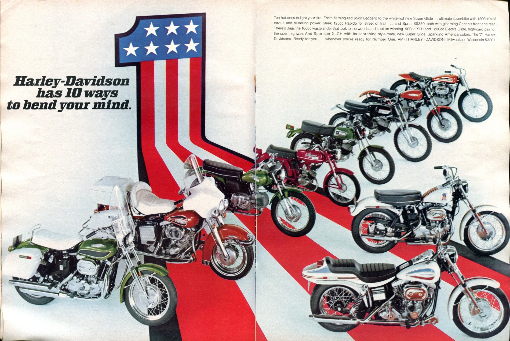

1. Definir primero qué debe significar el PASE
Al cambio en la forma en que se presenta una marca se le llama rebranding.
En un proceso de rebranding, antes de decidir colores, tipografías, símbolos o estilos gráficos debe definirse qué queremos que los estudiantes piensen y sientan sobre la marca.
Una identidad visual puede ayudar a reforzar una idea, pero difícilmente puede compensar que la organización no haya decidido qué quiere comunicar.
Veamos un ejemplo claro:
Algunas empresas, como Harley Davidson buscan comunicar rebeldía, considerando esto: ¿qué sentido tendría para ellos producir piezas gráficas que se vean elegantes y amigables?

De hecho, producir algo así de incoherente podría ser negativo para la percepción que la gente tiene de la marca.
Por eso, antes de diseñar el rebranding, el PASE debería poder responder con claridad:
¿Qué queremos que piense un estudiante cuando escuche “PASE”?
¿Queremos que piense que somos sabios?
¿Cuidadores?
A menudo las marcas toman un arquetipo o una combinación de varios para conseguir una personalidad reconocible.
Otra pregunta que no debe perderse de vista es:
¿En qué situaciones queremos que un estudiante recuerde al PASE?
Esto último es especialmente importante.
La investigación del Ehrenberg-Bass Institute denomina Category Entry Points (CEP) a las situaciones, necesidades, motivos o contextos que hacen que una categoría venga a la memoria. Estos puntos funcionan como caminos mentales mediante los cuales las personas recuerdan marcas cuando surge una necesidad.
Aplicado al PASE
El programa debería identificar situaciones concretas en las que quiere ser recordado.
Por ejemplo:
“Estoy teniendo dificultades con una materia.”
“Me siento estresado y el ciclo está siendo demasiado pesado.”
“El próximo ciclo se ve muy complicado y no sé qué materias inscribir.”
“Quiero saber qué recursos ofrece la UCA para ayudarme.”
No significa que esas deban ser necesariamente las asociaciones definitivas. Significa que la marca debería decidir qué situaciones quiere conectar con el PASE en la memoria de los estudiantes.
Ejemplo
Gatorade no intenta asociarse únicamente con una descripción del producto —“bebida deportiva”—, sino con numerosos momentos de consumo: correr, ir al gimnasio, desafiar tus capacidades físicas.
De manera equivalente, el PASE debería aspirar a estar conectado mentalmente con las situaciones en las que sus servicios pueden resultar relevantes.
Preguntas por responder
Antes de aprobar el rebranding, el equipo debería poder completar estas frase:
Cuando los estudiantes piensen en el PASE queremos que la marca se sienta ____________.
Queremos que los estudiantes piensen en el PASE cuando ____________.
Nota: los mismos criterios deberían aplicarse para cada programa que forma parte de la marca.
Referencias
- Mark, M., & Pearson, C. S. (2001). The hero and the outlaw: Building extraordinary brands through the power of archetypes. McGraw-Hill. https://carolspearson.com/books-page/the-hero-and-the-outlaw-building-extraordinary-brands-through-the-power-of-archetypes
- Romaniuk, J. (2022). Category Entry Points in a business-to-business (B2B) world. Ehrenberg-Bass Institute for Marketing Science. https://marketingscience.info/news-and-insights/category-entry-points-in-a-business-to-business-b2b-world